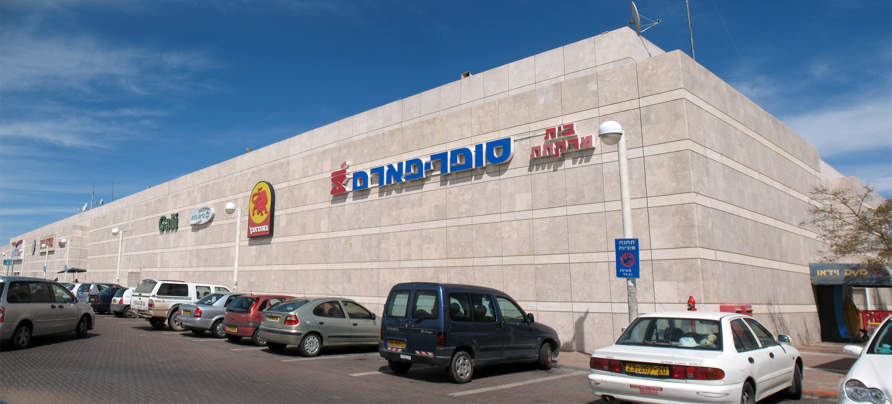

As we currently progress into week two of the module, one of the things that strikes me is how increasingly complicated and multi-layered the conflict is becoming as we move our analysis towards the contemporary situation in the region, with even my earlier definition of describing the situation as a ‘conflict’ also included in this confusion. Adding to this complication was the increasing challenge to my previous notions that the situation was ‘egalitarian’ in some way, with each of the readings and lectures indicating that it seems a very unequal battle in its current iteration. Much of the discussion this week centred around the discriminatory nature of violence that occurs in the region and how it differs depending on whether you are Jewish or Palestininan. While Professor Landy notes that Israeli Jews are certainly subject to flashpoints of extreme violence in the region, he argues that the structural violence through injustices and degradation faced by Palestinian’s on a daily basis is much more sinister form of oppression that is rarely seen from the outside. At first, I thought David’s arguments of the social degradation and humiliation for Palestenians might be exaggerated, however these thoughts were quickly dispelled after reading Siegman’s (2018) description of Palestenians in the workplace and the forced degradation of wearing a t-shirt with ‘chag atzmaut sameach’ on the front and a cartoon Israeli flag on the back.
 A Super-Israel shop in Jerusalem.In trying to think of a domestic comparison, the closest thing I could think of was the symbolic nature of the poppy in Northern Ireland, however Siegman’s example in the supermarket seems more recent and disturbing. What also surprised me this week was how wide and varied the different discriminations were for Palestininans, with the readings for this week almost resembling a spectrum of anecdotal humiliation for Palestinians in the region, from Makdisi’s (2008) example of flying in and out of Palestine every three months, to Calis (2017) example of a farmer losing his land, the situation seems bleak. The recommended podcast also didn’t alleviate this sense of futility from the Palestenian persecptive either, with Edo and Amjad both agreeing that the Covid pandemic has spurned the breakup of the Joint list while the ‘feckless’ Zionist left doesn’t seem to be much use either.